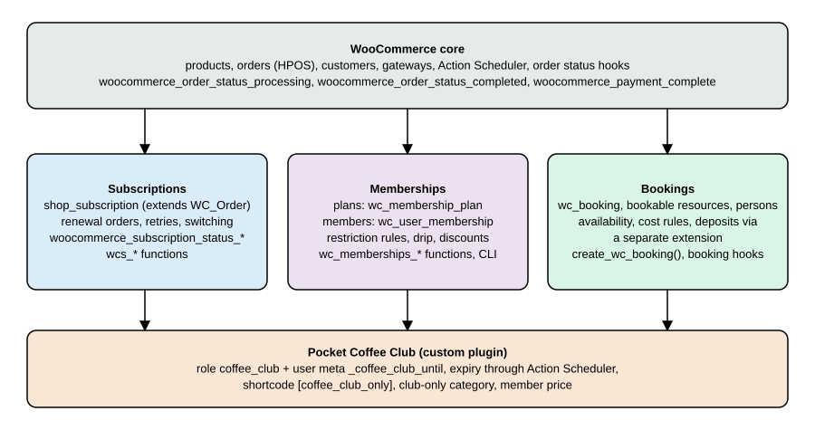
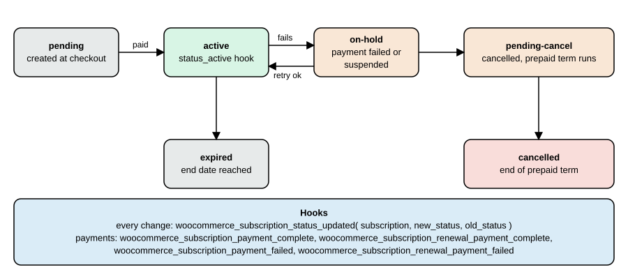
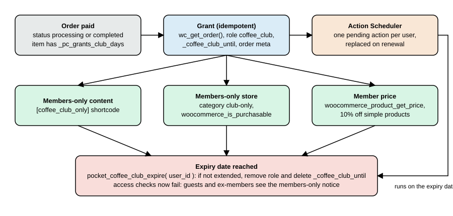

Subscriptions, Memberships and Bookings
|
This content was generated with the assistance of AI and should be verified against the official documentation before being relied on in production. |
Core WooCommerce sells products once. Three needs come up in almost every shop that sells something people keep using: charging again every month (a subscription), controlling who may see content or buy products (a membership), and selling a slot on a calendar (a booking). WooCommerce solves them with paid extensions from the Woo Marketplace, WooCommerce Subscriptions, WooCommerce Memberships and WooCommerce Bookings, and with a handful of core building blocks (roles, order status hooks, Action Scheduler) that a small custom plugin can use when an extension is more than the shop needs. This page maps the three extensions as documented on 2026-10-27, lists their data models, functions, hooks and command-line tools, and then builds the membership-site recipe from a classic WooCommerce cookbook again for WooCommerce 11.2.1 on WordPress 7.1.3: an annual Coffee Club pass that grants a role, expires through Action Scheduler, unlocks content, a members-only product category and a member price.
The extensions need a Woo account and a licence, so they were not installed in the test stack. Everything said about them comes from the vendor’s documentation pages and product pages, named in each section. The custom Coffee Club plugin did run: it was installed on a disposable WordPress 7.1.3 and WooCommerce 11.2.1 Docker stack (PHP 8.3, MariaDB 11.8, HPOS enabled) and the outputs below were produced there. Related pages: Taxes, Coupons, Currencies and i18n (the Coffee Club coupon and the tax treatment of digital passes), Action Scheduler, HPOS and Payment Gateways.
The three extensions at a glance
| Subscriptions | Memberships | Bookings | |
|---|---|---|---|
Purpose |
Recurring payments for products and services. |
Plans that restrict content and products, with member discounts. |
Bookable time slots, dates and resources. |
Version seen on its Marketplace page, 2026-10-27 |
9.3.0 |
1.30.2 (by SkyVerge) |
3.12.1 |
Requirements stated on the page |
WordPress 7.0 or newer (tested up to 7.1), WooCommerce 11.0 or newer (tested up to 11.1), PHP 7.4 |
WordPress 5.6 or newer, WooCommerce 3.9.4 or newer, PHP 7.4; tested with WordPress 7.1.3 and WooCommerce 11.2.1 |
WordPress 7.0 or newer, WooCommerce 11.1 or newer, PHP 7.4; tested with WordPress 7.1 and WooCommerce 11.2 |
HPOS and Cart and Checkout blocks |
Both listed as supported. |
Both listed as supported. |
Both listed as compatible. |
Licence |
Annual licence with a 30-day money-back guarantee. |
Annual licence with a 30-day money-back guarantee. |
Annual licence with a 30-day money-back guarantee. |
Extension storage |
|
custom posts |
custom posts such as |
Developer docs |
Action, filter, function and data-structure references. |
Function, hook, data-structure, CLI and abilities references. |
Action and filter reference, programmatic bookings. |
Prices and plan lengths change and depend on the visitor’s region, so none are quoted here; the product pages show the current ones. Check the version and requirement lines before installing: Woo’s support policy covers the latest and the previous series of WordPress and WooCommerce, and a store on an older WooCommerce may need an older extension release.

Two related extensions often appear in the same projects. WooCommerce Deposits is a separate extension; the Bookings page says deposits are not built into Bookings. Bookings also says it is not built for recurring events on its own, and that its Google Calendar sync supports one calendar (a vendor reply in the reviews points to a Zapier-based workaround for several).
Core building blocks
All three extensions, and the custom plugin below, rely on pieces that are in WordPress and WooCommerce core.
-
Roles and capabilities.
add_role()andWP_User::add_role()andWP_User::remove_role()store a role in user meta; a role is a bundle of capabilities and also a convenient flag. A role is global to the site and carries no expiry by itself. -
User meta. A date such as
_coffee_club_untilrecords when access ends. -
Order status hooks. WooCommerce fires
woocommerce_order_status_{status}andwoocommerce_order_status_{old}_to_{new}after every status change, andwoocommerce_payment_completeafterWC_Order::payment_complete(). Always load the order withwc_get_order()and read data throughWC_Ordermethods, neverget_post()orget_post_meta(): orders are not posts under HPOS. -
Product types and flags. Virtual products have no shipping. A virtual product that is also downloadable completes automatically after payment; a virtual product that is not downloadable stops at
processing. This difference is verified below and decides which status a membership grant must listen to. -
Action Scheduler.
as_schedule_single_action(),as_unschedule_all_actions()andas_get_scheduled_actions()queue work for a future time, reliably and visible in Tools > Scheduled Actions;wp action-scheduler run --hooks=hook_nameruns it from the command line. -
WooCommerce extensions as data. Extensions add product types, order types (
shop_subscription) or custom post types, and register their own REST routes, WP-CLI commands and, in recent releases, WordPress Abilities (see Memberships below).
Source: Action Scheduler: API reference
WooCommerce Subscriptions
What it provides
According to the product page, Subscriptions lets customers pay weekly, monthly or annually; each product can be one-time, a subscription or both; it supports free trials, sign-up fees, discounts, downloadable products on subscription and gifting; renewals are automatic through more than 25 payment gateways (named examples: WooPayments, Stripe, PayPal and PayPal Braintree) or manual through any WooCommerce gateway with automatic invoices; failed payments are retried with customer emails; billing dates can be aligned with a first payment that is full, on the next billing date or prorated; several subscriptions can be combined into one order and payment; and customers upgrade, downgrade, suspend, cancel and change their address or payment method from My Account. A Subscriptions Health Check is part of the tooling. Store managers edit subscriptions in WordPress admin.
For Pocket Coffee this is the "coffee club" in its recurring form: a monthly 250 g bag at 8.90 EUR (a variable subscription product with the origin as attribute), with a sign-up fee for the starter kit, free shipping in Spain from 40 EUR (a shipping rule, not a subscription feature) and the Coffee Club discount carried on the recurring total. The extension was not installed here, so the subscription is described, not run.
Data model
-
Storage. A subscription is the order type
shop_subscription: aWC_Subscriptionobject that extendsWC_Order. Under legacy storage it is a post of that type; under HPOS it is a row ofwc_orderswith the same type, and line items are ordinary order items whoseorder_idis the subscription id. -
Products. Subscription products are
productorproduct_variationposts with theproduct_typetermssubscriptionorvariable-subscription, instantiated asWC_Product_Subscription,WC_Product_Variable_SubscriptionandWC_Product_Subscription_Variation. Product meta includes_subscription_price,_subscription_sign_up_fee,_subscription_period,_subscription_period_interval,_subscription_length,_subscription_trial_period,_subscription_trial_length,_subscription_limit,_subscription_one_time_shippingand_subscription_payment_sync_date. -
Dates. Subscription dates are stored as UTC MySQL datetime strings under
_schedule_trial_end,_schedule_next_paymentand_schedule_end, plus the flags_requires_manual_renewaland_suspension_count. The documentation warns that writing_schedule_next_paymentdirectly does not reschedule anything; callWC_Subscription::update_dates(). -
Related orders. A subscription has a parent order (the checkout order), and each billing cycle creates a renewal order; switching and resubscribing create switch and resubscribe orders.
WC_Subscription::get_related_orders( $return_fields, $order_type )returns them ($return_fieldsisidsorall;$order_typeisparent,renewal,resubscribe,switch,anyor an array of those; the default is parent and renewal).
Functions and methods
The function reference documents these methods of WC_Subscription; the free-standing helpers such as wcs_create_subscription() and wcs_get_subscription() exist but are not signed on that page, so check the plugin source before relying on their arguments.
| Method | Purpose |
|---|---|
|
Returns |
|
Sets those dates from an array keyed by date type; reschedules the actions. |
|
Computes |
|
Whether a date may change. |
|
Recurring total. |
|
Manual or automatic renewal. |
|
Gateway and its meta. |
|
For example |
|
Completed, refunded or net payments. |
|
Counters and flags. |
Status changes and payment hooks

The action reference lists more than 250 hooks in total; the ones a membership or fulfilment integration needs are these.
| Hook | Fires | Arguments |
|---|---|---|
|
A payment succeeds on an initial or renewal order. |
|
|
A payment succeeds on a renewal order only. |
|
|
A payment fails on an initial, switch or renewal order. |
|
|
A renewal payment fails. |
|
|
After any status change. |
|
|
After the subscription reaches that status; cancellation first moves to |
|
|
A renewal payment is due (on schedule or manual). |
|
|
The same, for the gateway to process. |
|
|
Scheduled lifecycle events. |
|
|
A pending subscription is created at checkout, before payment. |
|
|
The user’s role changed because of a status change. |
|
|
A plan switch finished. |
|
Useful filters are woocommerce_subscriptions_product_price_string (the price text of a product), woocommerce_subscription_price_string (the text of cart and order totals), woocommerce_subscription_periods, woocommerce_subscription_period_interval_strings and woocommerce_subscription_lengths (restrict periods, intervals and lengths, which is the supported way to offer a custom interval), woocommerce_subscriptions_product_first_renewal_payment_time (the first renewal timestamp, for aligned billing dates), woocommerce_is_subscription, wcs_user_has_subscription, wcs_get_users_subscriptions, wcs_view_subscription_actions, wcs_renewal_order_created and wcs_renewal_order_meta_query, wcs_can_user_resubscribe_to_subscription, wcs_switch_proration_extra_to_pay (since 8.8.0) and woocommerce_subscription_settings.
A documented gateway interface lets a payment gateway process renewals (woocommerce_scheduled_subscription_payment_{$gateway_id}); gateways that do not declare the recurring features fall back to manual renewals, where the customer pays an invoice. The integration guide for gateway authors is linked in the references.
Pocket Coffee: grant access while a subscription is active
When the Coffee Club is a subscription instead of a one-off annual pass, the grant and the revoke hang off the status hooks rather than off the order. The next sketch is derived from the documented hook names; it was not run because the extension was not available. It keeps access during pending-cancel (the customer has paid for the term) and removes it when the subscription goes on hold, is cancelled or expires. Subscriptions also changes the user’s role itself and announces it with woocommerce_subscriptions_updated_users_role, so a rule that only reads the role needs no code at all.
<?php
add_action(
'woocommerce_subscription_status_active',
function ( $subscription ) {
( new WP_User( $subscription->get_user_id() ) )->add_role( 'coffee_club' );
}
);
foreach ( array( 'on-hold', 'cancelled', 'expired' ) as $status ) {
add_action(
'woocommerce_subscription_status_' . $status,
function ( $subscription ) {
( new WP_User( $subscription->get_user_id() ) )->remove_role( 'coffee_club' );
}
);
}WooCommerce Memberships
What it provides
Memberships is a SkyVerge extension sold through the Woo Marketplace. Plans are separate from products: a plan can be sold as a product, granted by buying one of several products, or assigned manually (the WP-CLI access modes are free, signup, purchase and manual-only). A plan restricts posts, pages, products and categories, can drip content (for example "available after one week of membership"), gives member discounts on all products, selected products or categories, offers member-only free shipping, shows a member area with the content, products, discounts and notes of the member, supports CSV import and export of members, membership notes and reminder emails for expiry and renewal. With Subscriptions installed it adds recurring billing, instalment-style plans, free trials and pause, upgrade and downgrade with proration; it also works without Subscriptions. Companion products listed on the page include Teams for WooCommerce Memberships, Mailchimp for WooCommerce Memberships and Social Login.
Data model
Plans are posts of type wc_membership_plan with the meta _product_ids, _access_length and _members_area_sections; restriction rules are stored in options (names containing wc_memberships), not in post meta. A user membership is a post of type wc_user_membership, a child of its plan with the member as author; the post status holds the membership status with a wcm- prefix, and the documentation recommends reading it through the plugin accessors. Its meta is _product_id, _order_id, _subscription_id, _start_date, _end_date (0 for unlimited) and _paused_date. Notes are comments on that post. The data-structure page does not mention HPOS; the product page does list it as supported, and memberships are posts, not orders.
Functions
| Function | Purpose |
|---|---|
|
Membership checks by plan slug, id or object. |
|
Read user memberships; |
|
Create or renew a membership ( |
|
Read plans. |
|
Whether the user may |
|
Restriction checks. |
|
Member discounts. |
|
Restrict inline content to plans. |
|
Memberships tied to a subscription. |
|
Member area. |
A Pocket Coffee check with those functions, not run for the reason given above:
<?php
if ( wc_memberships_is_user_active_member( get_current_user_id(), 'coffee-club' ) ) {
echo esc_html__( 'Welcome back, club member.', 'pocket-coffee-memberships' );
}Hooks, WP-CLI and abilities
The hook reference documents messages and member-area filters rather than lifecycle hooks: wc_memberships_the_restricted_content, wc_memberships_content_restricted_message, wc_memberships_product_viewing_restricted_message, wc_memberships_product_purchasing_restricted_message, wc_memberships_member_discount_message, wc_memberships_get_renew_membership_url and wc_memberships_get_cancel_membership_url, the member-area actions wc_memberships_before_members_area and wc_memberships_after_members_area, and the plugin lifecycle actions wc_memberships_activated and wc_memberships_deactivated. For status changes and membership creation the page points to the inline documentation of the plugin source, so look there for the exact names in your version.
The legacy wp wc memberships commands were deprecated in Memberships 1.13.0 in favour of the REST-backed wp wc user_membership and wp wc membership_plan groups. The CLI reference still documents plan create, plan update, plan get, plan list, plan delete and the matching membership commands, with arguments such as --name, --slug, --access, --length, --product, --start_date, --end_date and --status for plans and --customer, --plan, --order, --product, --subscription and --status for memberships (the example commands on that page are not guaranteed to match the command names, so run wp help wc on your install first).
Memberships 1.28.0 and later register WordPress Abilities (the Memberships documentation names WordPress core 6.9 as the version that provides the Abilities API): woocommerce-memberships/plans-create, plans-get, plans-list, plans-delete and user-memberships-create, -get, -list, -delete, all requiring the manage_woocommerce capability. They are not exposed to the WooCommerce MCP server by default; the documentation shows a woocommerce_mcp_include_ability filter that returns true for IDs starting with woocommerce-memberships/ to opt in, with a privacy notice that connected clients can then reach personal data. See the AI and MCP page for the Abilities API itself.
WooCommerce Bookings
What it provides
The product page lists bookable products with fixed time slots or flexible ranges in minutes, hours or days (the FAQ adds weeks and months); availability rules at store, product and resource level with buffers and lead time; resources (staff, rooms, equipment) with their own availability; persons with minimum, maximum and person types; group, day, time-based and per-person pricing; confirmation by the merchant; notification and reminder emails; availability in the customer’s time zone; and Google Calendar sync. Bookings works with any WooCommerce payment gateway. Pocket Coffee would sell a two-hour "Cupping class" for up to eight persons with a resource "Tasting room" and a maximum of one class per evening; the shop that sells the starter kit and the class together needs nothing beyond Bookings itself.
Statuses, in-cart expiry and hooks
A booking is created as soon as it is added to the cart and removed after 60 minutes if the order is not placed (filter woocommerce_bookings_remove_inactive_cart_time, in minutes). The valid statuses named on the programmatic-creation page are unpaid, pending, confirmed, cancelled and complete; the reference lists generic transition actions.
| Hook or filter | Purpose |
|---|---|
|
Fire when a booking enters a status or moves between two; arguments are the booking id and object. The documentation’s example uses |
|
A booking row was created (for example added to the cart). |
|
A booking was cancelled. |
|
Before and after the admin save. |
|
Adjust the cost before it is returned. |
|
Clean the posted booking form data. |
|
Change availability rules for a resource (0 means the product). |
|
Which statuses block the calendar and which schedule events such as reminders. |
|
Customer cancellation rules. |
|
Days before a booking to send reminders (default 1). |
|
Earliest and latest bookable dates. |
|
My Account bookings endpoint and statuses. |
Creating a booking in code
create_wc_booking( $product_id, $new_booking_data = array(), $status = 'confirmed', $exact = false ) creates a booking. The data keys are product_id, start_date, end_date and resource_id by default, plus user_id, order_item_id, persons, cost, all_day and parent_id; order_item_id is how a booking is linked to an order that contains a bookable product, and the documentation does not discuss HPOS for this function. A sketch for the Cupping class (not run: Bookings was not available):
<?php
$booking = create_wc_booking(
123, // Product id of the "Cupping class" bookable product.
array(
'start_date' => strtotime( '2026-11-14 18:00' ),
'end_date' => strtotime( '2026-11-14 20:00' ),
'resource_id' => 7, // Resource "Tasting room".
'persons' => array( 4 ),
'user_id' => get_current_user_id(),
),
'unpaid'
);The documentation’s own example creates a one-week follow-up booking from the hooks above, skipping bookings that already have a parent, and the same page shows loading a booking with get_wc_booking(). The shape of persons depends on the person types the product defines, so read the booking data in the admin before copying that line.
The membership-site recipe, rewritten
The classic cookbook chapter on running a membership site (Rauland, WooCommerce Cookbook, 2015, chapter 4) combines the Subscriptions plugin with pricing-table, dynamic-pricing and conditional-content plugins, and with snippets for members-only content and a members-only store. Its premise is still sound, but the concrete tools and some code predate blocks and HPOS. The table maps each recipe to what to do on WooCommerce 11.2.1.
| Recipe in the book | Today | Where it is done here |
|---|---|---|
Add a subscription product with the Subscriptions plugin |
Same extension, now version 9.x; create a Simple subscription or Variable subscription product; works with the Cart and Checkout blocks and HPOS. |
Subscriptions section above. |
Pricing tables with Easy Pricing Tables |
Use the Product Collection or a pattern in the block editor; a pricing table is just a page with the plan products and their prices. |
Not WooCommerce-specific. |
Member-only pricing with Dynamic Pricing |
Memberships provides member discounts; a custom |
Member price in the plugin. |
Special pricing for logged-in users with Conditional Content |
A core |
|
Members-only content |
Memberships restrictions, or a role check. |
|
Members-only store |
Memberships product restriction, or |
|
Making subscription payments more consistent |
Payment synchronisation (billing-date alignment) in Subscriptions, and |
Documented above, not run. |
Customising the price string |
|
Documented above, not run. |
A custom subscription interval |
The period, interval and length filters. |
Documented above, not run. |
Exporting subscription orders |
Orders and subscriptions export through Analytics, the REST API or a CSV tool; for memberships the extension has CSV export. |
See the analytics and REST pages. |
Source: Rauland, WooCommerce Cookbook (Packt, 2015), chapter 4, as a table of contents; the code below follows the current WooCommerce documentation instead.
Many shops do not need a paid extension for one simple rule: "whoever bought the annual pass is a member until a date". The Pocket Coffee Club plugin does exactly that with core features. Its design:
-
The pass is a virtual product (
PC-CLUB-YEAR, 49.00 EUR) with the product meta_pc_grants_club_daysset to 365. -
When an order that contains it is paid, the plugin loads it with
wc_get_order(), adds the rolecoffee_clubto the customer, stores the end date in the user meta_coffee_club_untiland schedules one Action Scheduler action for that moment. A second pass extends the date and replaces the scheduled action. -
A shortcode, a product category and a price filter read the date through
pocket_coffee_is_member(). -
On the expiry date the action removes the role and the meta, unless a renewal already moved the date.

Running it
After wp plugin activate pocket-coffee-memberships the role exists:
wp role list --fields=name,role --format=tableCoffee Club coffee_club
(one line of the table). The pass and a club-only product were created with WP-CLI, with the category club-only created first:
wp wc product_cat create --name="Club only" --slug=club-only --user=admin --porcelain
wp wc product create --name="Coffee Club annual pass" --type=simple --virtual=true --regular_price=49.00 \
--sku=PC-CLUB-YEAR --user=admin --porcelain
wp wc product create --name="Club reserve beans 250 g" --type=simple --regular_price=14.90 \
--sku=PC-CLUB-RESERVE-250 --categories='[{"id":30}]' --user=admin --porcelain(The ids 30, 240 and 241 are the ones this store assigned.) The first version of the plugin listened only to woocommerce_order_status_completed. An order for the pass was created for the customer Ada (ada@example.test) and paid with payment_complete():
order 242 status pending needs_processing=true after payment_complete: processing roles: customer until: 1970-01-01
The order stopped at processing: only a virtual product that is also downloadable is completed automatically, so the grant never fired. The plugin therefore hooks both woocommerce_order_status_processing and woocommerce_order_status_completed, and the _pc_club_granted order meta makes the second call harmless. After moving the order to completed:
status completed granted until 2027-10-27
roles: customer,coffee_club until: 2027-10-27 is_member=true
note: Coffee Club access until 2027-10-27.
scheduled: {"436":["pocket_coffee_club_expire",[7],"pocket-coffee","2027-10-27"]}
A renewal (a second pass bought and paid) extends from the current end date rather than from today, keeps exactly one pending expiry action, and replaying the hook for the same order changes nothing:
renewal order status processing until 2028-10-26 pending expiry actions: 1 until after replay 2028-10-26
The year 2028 has a leap day, which is why 2027-10-27 plus 365 days is 2028-10-26. Access, the club-only store and the member price, as guest and as member:
guest content: This content is for Coffee Club members. guest reserve purchasable: false kit price 24.00 member content: Roast calendar: Ethiopia on the 5th member reserve purchasable: true kit price 21.6
(the Starter kit at 24.00 EUR costs a member 21.60). Last, the expiry was exercised by moving the end date into the past, scheduling the action in the past and running only that hook through Action Scheduler’s CLI:
wp action-scheduler run --hooks=pocket_coffee_club_expire --forceFound 1 scheduled task Started processing action 488 Completed processing action 488 with hook: pocket_coffee_club_expire 1 batch executed.
and Ada’s roles went back to customer with an empty _coffee_club_until and pocket_coffee_is_member() false.
Source: WooCommerce docs: CRUD objects
The plugin
The whole plugin. It passes PHP_CodeSniffer with the WooCommerce-Core standard without errors or warnings, and declares compatibility with HPOS and the Cart and Checkout blocks.
<?php
/**
* Plugin Name: Pocket Coffee Memberships
* Description: A small Coffee Club membership: a role granted by an order, expiry through Action Scheduler, members-only content, a members-only product and a member price.
* Version: 0.1.0
* Requires at least: 7.0
* Requires PHP: 7.4
* Requires Plugins: woocommerce
* Text Domain: pocket-coffee-memberships
* License: GPL-2.0-or-later
*
* @package PocketCoffeeMemberships
*/
defined( 'ABSPATH' ) || exit;
const POCKET_COFFEE_CLUB_ROLE = 'coffee_club';
const POCKET_COFFEE_CLUB_META = '_coffee_club_until';
const POCKET_COFFEE_CLUB_ACTION = 'pocket_coffee_club_expire';
// Declare compatibility with HPOS (custom order tables) and the Cart and Checkout blocks.
add_action(
'before_woocommerce_init',
function () {
if ( class_exists( \Automattic\WooCommerce\Utilities\FeaturesUtil::class ) ) {
\Automattic\WooCommerce\Utilities\FeaturesUtil::declare_compatibility( 'custom_order_tables', __FILE__, true );
\Automattic\WooCommerce\Utilities\FeaturesUtil::declare_compatibility( 'cart_checkout_blocks', __FILE__, true );
}
}
);
/**
* Create the member role on activation (roles live in the database).
*/
function pocket_coffee_club_activate() {
add_role( POCKET_COFFEE_CLUB_ROLE, 'Coffee Club', array( 'read' => true ) );
}
register_activation_hook( __FILE__, 'pocket_coffee_club_activate' );
/**
* Remove the role on deactivation; members keep their expiry meta, so a later activation restores nothing by itself.
*/
function pocket_coffee_club_deactivate() {
remove_role( POCKET_COFFEE_CLUB_ROLE );
}
register_deactivation_hook( __FILE__, 'pocket_coffee_club_deactivate' );
/**
* Is the user an active Coffee Club member?
*
* @param int $user_id User id.
* @return bool
*/
function pocket_coffee_is_member( $user_id ) {
$until = (int) get_user_meta( $user_id, POCKET_COFFEE_CLUB_META, true );
return $until > time();
}
/**
* Grant or extend the membership when an order that contains the pass is paid.
* A virtual product that is not downloadable is not auto-completed by WooCommerce: the order stops at
* "processing", so both statuses are hooked. The _pc_club_granted order meta makes the grant idempotent.
* Products carry the meta _pc_grants_club_days (days of access).
*
* @param int $order_id Order id.
*/
function pocket_coffee_club_grant( $order_id ) {
$order = wc_get_order( $order_id ); // Never get_post() or get_post_meta() on orders: HPOS.
if ( ! $order || ! $order->get_customer_id() || $order->get_meta( '_pc_club_granted' ) ) {
return;
}
$days = 0;
foreach ( $order->get_items() as $item ) {
$product = $item->get_product();
if ( $product ) {
$days += (int) $product->get_meta( '_pc_grants_club_days' ) * $item->get_quantity();
}
}
if ( $days < 1 ) {
return;
}
$user_id = $order->get_customer_id();
$start = max( time(), (int) get_user_meta( $user_id, POCKET_COFFEE_CLUB_META, true ) ); // Renewals extend.
$until = $start + $days * DAY_IN_SECONDS;
update_user_meta( $user_id, POCKET_COFFEE_CLUB_META, $until );
( new WP_User( $user_id ) )->add_role( POCKET_COFFEE_CLUB_ROLE );
// One expiry action per user: replace the previous one when the membership is extended.
as_unschedule_all_actions( POCKET_COFFEE_CLUB_ACTION, array( $user_id ), 'pocket-coffee' );
as_schedule_single_action( $until, POCKET_COFFEE_CLUB_ACTION, array( $user_id ), 'pocket-coffee' );
$order->update_meta_data( '_pc_club_granted', $until );
$order->add_order_note( sprintf( 'Coffee Club access until %s.', gmdate( 'Y-m-d', $until ) ) );
$order->save();
}
add_action( 'woocommerce_order_status_processing', 'pocket_coffee_club_grant' );
add_action( 'woocommerce_order_status_completed', 'pocket_coffee_club_grant' );
/**
* Expiry handler run by Action Scheduler.
*
* @param int $user_id User id.
*/
function pocket_coffee_club_expire( $user_id ) {
if ( pocket_coffee_is_member( $user_id ) ) {
return; // Extended meanwhile.
}
( new WP_User( $user_id ) )->remove_role( POCKET_COFFEE_CLUB_ROLE );
delete_user_meta( $user_id, POCKET_COFFEE_CLUB_META );
}
add_action( POCKET_COFFEE_CLUB_ACTION, 'pocket_coffee_club_expire' );
/**
* Members-only content: [coffee_club_only]...[/coffee_club_only].
*
* @param array $atts Attributes (unused).
* @param string|null $content Enclosed content.
* @return string
*/
function pocket_coffee_club_shortcode( $atts, $content = null ) {
unset( $atts );
if ( is_user_logged_in() && pocket_coffee_is_member( get_current_user_id() ) ) {
return do_shortcode( (string) $content );
}
return '<p class="pocket-coffee-members-only">' . esc_html__( 'This content is for Coffee Club members.', 'pocket-coffee-memberships' ) . '</p>';
}
add_shortcode( 'coffee_club_only', 'pocket_coffee_club_shortcode' );
/**
* Members-only store: products in the category "club-only" can only be bought by members.
*
* @param bool $purchasable Whether the product is purchasable.
* @param WC_Product $product The product.
* @return bool
*/
function pocket_coffee_club_purchasable( $purchasable, $product ) {
$id = $product->is_type( 'variation' ) ? $product->get_parent_id() : $product->get_id();
if ( $purchasable && has_term( 'club-only', 'product_cat', $id ) ) {
return is_user_logged_in() && pocket_coffee_is_member( get_current_user_id() );
}
return $purchasable;
}
add_filter( 'woocommerce_is_purchasable', 'pocket_coffee_club_purchasable', 10, 2 );
/**
* Member price: 10% off the current price of simple products for members.
* Variable products need the price hash and variation price filters as well; not covered here.
*
* @param string $price Price.
* @param WC_Product $product Product.
* @return string
*/
function pocket_coffee_club_member_price( $price, $product ) {
if ( '' === $price || is_admin() || ! is_user_logged_in() || ! pocket_coffee_is_member( get_current_user_id() ) ) {
return $price;
}
return $product->is_type( 'simple' ) ? (string) wc_format_decimal( (float) $price * 0.9 ) : $price;
}
add_filter( 'woocommerce_product_get_price', 'pocket_coffee_club_member_price', 10, 2 );Limits of the do-it-yourself version
-
Refunds and cancellations. The plugin grants access on payment and never revokes it when the order is refunded or cancelled. A production version also listens to
woocommerce_order_status_refundedandwoocommerce_order_status_cancelledand subtracts the days. -
Guests. A guest checkout has no customer id, so no membership is granted. Force account creation for the pass or grant by email.
-
Prices and caching. The member price filter acts on the price of simple products only. Variable products need the variation price and price-hash filters as well, and shop pages cached for everybody must vary by role or skip the cache for logged-in users; see the performance page.
-
Taxes. A digital pass is taxed by the place-of-supply rules of digital goods, not as coffee; assign it a tax class accordingly (see the tax section of the taxes page).
-
Content blocks. The shortcode protects text only. Query Loop blocks, REST endpoints and feeds are not covered; Memberships restricts content centrally, which is the main reason to buy it.
-
Time. The expiry is a UTC timestamp; show dates in the site time zone when you print them.
What was run and what was not
Run on WooCommerce 11.2.1, WordPress 7.1.3, PHP 8.3 and MariaDB 11.8 with HPOS enabled: the Coffee Club plugin (activation and role, product and category creation with WP-CLI, grant through payment_complete() and update_status(), renewal, idempotence, shortcode, purchasable filter and member price as guest and as member, expiry through wp action-scheduler run) and PHP_CodeSniffer on it. The test products, orders, category, user and scheduled actions were removed afterwards and the plugin was deactivated.
Not run: WooCommerce Subscriptions, Memberships and Bookings and every example that uses their functions or hooks (they need a Woo account and a licence), WooCommerce Deposits, payment gateways that support recurring payments, and the Cart and Checkout blocks with a member price. Their sections reproduce what the vendor’s documentation and product pages said on 2026-10-27, and the sketches are derived from documented hook and function names.
References
-
WooCommerce Subscriptions docs: function and property reference
-
WooCommerce Bookings docs: creating bookings programmatically
-
Rauland, WooCommerce Cookbook (Packt, 2015), chapter 4 "Running a Membership Site", for the recipe topics rewritten above.